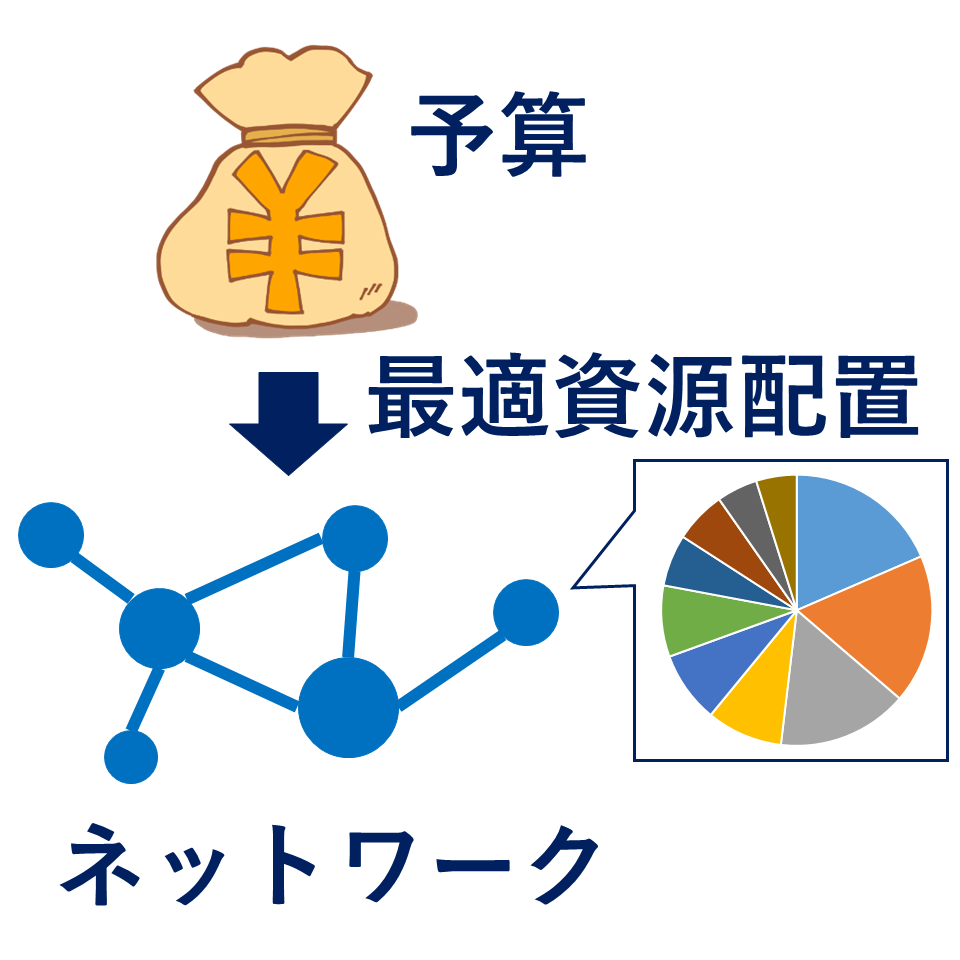

Research
Control of Fish School

A typical mathematical model of schooling fish involves an attraction/alignment/repulsion law, which is not necessarily well-considered in the current systems and control theory. In our research project, we are developing theories for the analysis and control of fish schooling models.
References
| [2] | M. Ogura and N. Wakamiya, “Reduced-order model predictive control of a fish schooling model,” Nonlinear Analysis: Hybrid Systems, vol. 49, p. 101342, 2023. [ DOI | arXiv | http ] |
| [1] | M. Ogura and N. Wakamiya, “Model predictive control of fish schooling model with reduced-order prediction model,” in 60th IEEE Conference on Decision and Control, 2021, pp. 4115-4120. [ DOI | http ] |
Shepherding

Shepherding problems refer to a problem of guiding a flock of agents from an initial location to an objective location by fewer external entities, and have several potential applications such as robotic agents to herd sheep and crowd control. We are developing novel algorithms for the shepherding of heterogeneous agents.
Proposed algorithm
Farthest Agent Targeting
References
| [12] | Y. Deng, A. Li, M. Ogura, and N. Wakamiya, “Collision-free shepherding control of a single target within a swarm,” in 2023 IEEE International Conference on Systems, Man, and Cybernetics (accepted), 2023. [ arXiv ] |
| [11] | W. Imahayashi, Y. Tsunoda, and M. Ogura, “Route design in sheepdog system-traveling salesman problem formulation and evolutionary computation solution-,” Submitted for publication, 2023. |
| [10] | A. Fujioka, M. Ogura, and N. Wakamiya, “Shepherding heterogeneous flocks: overview and prospect,” in 22nd IFAC World Congress, 2023, pp. 11523-11526. [ arXiv ] |
| [9] | Y. Deng, A. Li, M. Ogura, and N. Wakamiya, “Collision-free property analysis for the shepherding swarm,” in SICE Annual Conference 2023 (accepted), 2023. |
| [8] | A. Li, M. Ogura, and N. Wakamiya, “Communication-free shepherding navigation with multiple steering agents,” Frontiers in Control Engineering, vol. 4, 2023. [ DOI | arXiv | http ] |
| [7] | A. Fujioka, M. Ogura, and N. Wakamiya, “Shepherding algorithm for heterogeneous flock with model-based discrimination,” Advanced Robotics, vol. 37, no. 1-2, pp. 99-114, 2023. [ DOI | arXiv | http ] |
| [6] | A. Li, M. Ogura, and N. Wakamiya, “Proposal of a bearing-only shepherding algorithm with limited sensing capabilities,” in AROB-ISBC-SWARM 2023, 2023, pp. GS34-1. |
| [5] | Y. Deng, M. Ogura, A. Li, and N. Wakamiya, “Shepherding control for separating a single agent from a swarm,” in 1st IFAC Workshop on Control of Complex Systems, 2022, pp. 217-222. [ DOI | arXiv | http ] |
| [4] | A. Fujioka, M. Ogura, and N. Wakamiya, “Shepherding algorithm based on variant agent detection for heterogeneous flock,” in SICE Annual Conference 2022, 2022, pp. 87-91. Finalists of SICE Annual Conference 2022 Young Author's Award. [ DOI | http ] |
| [3] | A. Li, M. Ogura, Y. Tsunoda, and N. Wakamiya, “Proposal of farthest-agent targeting algorithm with indirect chasing,” in SICE Annual Conference 2022, 2022, pp. 92-94. |
| [2] | R. Himo, M. Ogura, and N. Wakamiya, “Iterative algorithm for shepherding unresponsive sheep,” Mathematical Biosciences and Engineering, vol. 19, no. 4, pp. 3509-3525, 2022. [ DOI | http ] |
| [1] | R. Himo, M. Ogura, and N. Wakamiya, “Shepherding algorithm for agents with heterogeneous sensitivities,” in 4th International Symposium on Swarm Behavior and Bio-Inspired Robotics 2021, 2021. [ http ] |
Deep Unfolding for Model-Based Control (TAF，CREST）

We are developing model-based controller synthesis framework by utilizing the novel machine learning technique called deep unfolding. We are finding that our approach is quite effective for the control of various classes of dynamical systems including systems with saturations, delay systems, and systems with stochastic noises.
References
| [8] | J. Aizawa, M. Ogura, M. Shimono, and N. Wakamiya, “Manipulation of neuronal network firing patterns using temporal deep unfolding-based MPC,” in 2023 Asia-Pacific Signal and Information Processing Association Annual Summit and Conference (accepted), 2023. |
| [7] | J. Aizawa, M. Ogura, M. Shimono, and N. Wakamiya, “Temporal deep unfolding-based MPC for controlling firing patterns of neuronal network.” in 2023 RISP International Workshop on Nonlinear Circuits, Communications and Signal Processing, 2023. |
| [6] | M. Ogura, K. Kobayashi, and K. Sugimoto, “Static output feedback synthesis of time-delay linear systems via deep unfolding,” in 17th IFAC Workshop on Time Delay Systems, 2022, pp. 214-215. [ arXiv ] |
| [5] | “When deep unfolding meets control engineering,” 37th International Technical Conference on CircuitsSystems, Computers and Communications, 2022. [ http ] |
| [4] | M. Kishida and M. Ogura, “Temporal deep unfolding for nonlinear maximum hands-off control,” in SICE Annual Conference 2021, 2021, pp. 1007-1010. [ arXiv ] |
| [3] | K. Kobayashi, M. Ogura, T. Kobayashi, and K. Sugimoto, “Deep unfolding-based output feedback control design for linear systems with input saturation,” in SICE International Symposium on Control Systems 2021, 2021, pp. 33-39. [ DOI | arXiv | http ] |
| [2] | J. J. R. Liu, M. Ogura, and J. Lam, “Learning-based stabilization of Markov jump linear systems,” Submitted for publication, 2020. |
| [1] | M. Kishida*, M. Ogura*, Y. Yoshida, and T. Wadayama, “Deep learning-based average consensus,” IEEE Access, vol. 8, pp. 142404-142412, 2020. (*equal contribution) [ DOI | arXiv | http ] |
Epidemics Control in Social Networks (JSPS Grant-in-Aid for Early-Career Scientists)

Due to the current pandemic of COIVD-19, the containment of epidemic processes taking place in social networks is a critical problem of both theoretical and practical interest. Because the vaccines are not yet fully available (as of Mar 16th, 2021), we still need to rely on taking social distances. This social distancing strategy can be regarded as a feedback control on the epidemic processes, as the degree of social distancing is in positive corelation with the disease spread. In our research group, we are leveraging systems and control theory to develop novel theoretical frameworks for the prediction and containment of epidemic spreading processes over complex networks.
Slides
References
| [8] | R. Liu, M. Ogura, E. F. D. Reis, and N. Masuda, “Effects of concurrency on epidemic spreading in Markovian temporal networks,” European Journal of Applied Mathematics (accepted for publication), 2023. [ arXiv | http ] |
| [7] | M. Ogura and C. Nowzari, “Special issue: modeling, analysis, and control of epidemics in networks,” Mathematical Biosciences and Engineering, vol. 20, no. 5, pp. 8446-8447, 2023. [ DOI ] |
| [6] | K. Hashimoto, Y. Onoue, M. Ogura, and T. Ushio, “Event-triggered control for mitigating SIS spreading processes,” Annual Reviews in Control, vol. 52, pp. 479-494, 2021. [ DOI | arXiv | http ] |
| [5] | N. Masuda, V. M. Preciado, and M. Ogura, “Analysis of the susceptible-infected-susceptible epidemic dynamics in networks via the non-backtracking matrix,” IMA Journal of Applied Mathematics, vol. 85, no. 2, pp. 214-230, 2020. [ arXiv | http ] |
| [4] | M. Ogura, W. Mei, and K. Sugimoto, “Upper-bounding dynamics on networked synergistic susceptible-infected-susceptible model,” in SICE Annual Conference 2019, 2019, pp. 1430-1431. |
| [3] | M. Ogura, V. M. Preciado, and N. Masuda, “Optimal containment of epidemics over temporal activity-driven networks,” SIAM Journal on Applied Mathematics, vol. 79, no. 3, pp. 986-1006, 2019. [ DOI | arXiv | http ] |
| [2] | M. Ogura and V. M. Preciado, “Second-order moment-closure for tighter epidemic thresholds,” Systems & Control Letters, vol. 113, pp. 59-64, 2018. [ DOI | arXiv | http ] |
| [1] | M. Ogura and V. M. Preciado, “Stability of spreading processes over time-varying large-scale networks,” IEEE Transactions on Network Science and Engineering, vol. 3, no. 1, pp. 44-57, 2016. Runner-up of 2019 IEEE TNSE Best Paper Award. [ DOI | arXiv | http ] |
Positive Systems（NII Open Collaborative Research）

Positive systems refer to, roughly speaking, the class of dynamical systems, whose response signals to nonnegative input signals are constrained to be nonnegative and have applications in various areas, including pharmacology, epidemiology, population biology, and communication networks. In our research group, we are developing a novel mathematical framework for optimizing positive systems with Geometric Programming. The framework is applicable to several problems of theoretical interest such as H2 and H-infinity optimizations as well as optimization under time-delays and structured uncertainties.
Slides
References
| [8] | C. Zhao, B. Zhu, M. Ogura, and J. Lam, “Parameterized synthesis of discrete-time positive linear systems: A geometric programming perspective,” IEEE Control Systems Letters, vol. 7, pp. 2551-2556, 2023. [ DOI | http ] |
| [7] | C. Zhao, X. Gong, Y. Ebihara, and M. Ogura, “Impulse-to-peak optimization of positive linear systems via DC programming,” in 22nd IFAC World Congress, 2023, pp. 5544-5549. |
| [6] | C. Zhao, B. Zhu, M. Ogura, and J. Lam, “Probability rate optimization of positive Markov jump linear systems via DC programming,” Submitted for publication, 2023. |
| [5] | X. Gong, M. Ogura, J. Shen, T. Huang, and Y. Cui, “Optimal epidemics policy seeking on networks-of-networks under malicious attacks by geometric programming,” IEEE Transactions on Systems, Man, and Cybernetics: Systems, vol. 53, no. 6, pp. 3845-3857, 2023. [ DOI | http ] |
| [4] | B. Zhu, J. Lam, and M. Ogura, “Log-log convexity of an optimal control problem for positive linear systems,” Automatica, vol. 146, p. 110553, 2022. [ DOI | http ] |
| [3] | M. Ogura, M. Kishida, and J. Lam, “Geometric programming for optimal positive linear systems,” IEEE Transactions on Automatic Control, vol. 65, no. 11, pp. 4648-4663, 2020. [ DOI | arXiv | http ] |
| [2] | C. Zhao, M. Ogura, and K. Sugimoto, “Stability optimization of positive semi-Markov jump linear systems via convex optimization,” SICE Journal of Control, Measurement, and System Integration, vol. 13, no. 5, pp. 233-239, 2020. [ DOI | arXiv | http ] |
| [1] | M. Ogura and C. F. Martin, “Stability analysis of positive semi-Markovian jump linear systems with state resets,” SIAM Journal on Control and Optimization, vol. 52, pp. 1809-1831, 2014. [ DOI | arXiv | http ] |
Control Theory meets with Design Engineering（NII Open Collaboration Research）
Projects are indispensable and central in most of the industries for performing several types of work (PMI 2013). For this reason, project management has been one of the major research themes in the feld of engineering design during the last half-century. In our research project, by leveraging theoretical results about positive systems and switched systems in the systems and control theory, we are developing an optimization framework for making a cost-efcient investment in design rules when the underlying dependency structure between modules is changing over time.
Slides
References
| [2] | C. Zhao, M. Ogura, M. Kishida, and A. Yassine, “Optimal resource allocation for dynamic product development process via convex optimization,” Research in Engineering Design, vol. 32, no. 1, pp. 71-90, 2021. [ DOI | arXiv | http ] |
| [1] | M. Ogura, J. Harada, M. Kishida, and A. Yassine, “Resource optimization of product development projects with time-varying dependency structure,” Research in Engineering Design, vol. 30, no. 3, pp. 435-452, 2019. [ DOI | arXiv | http ] |